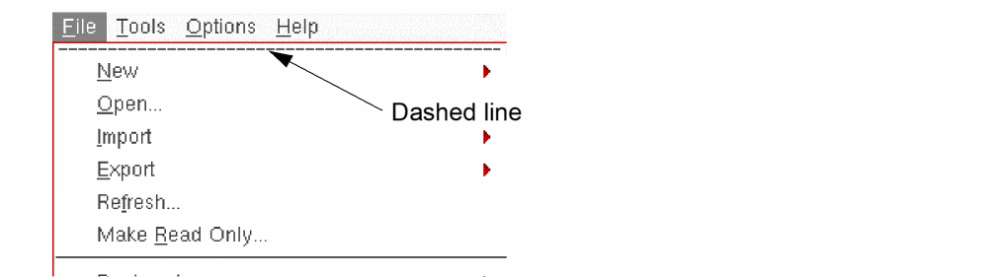
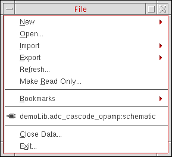

Tearing Off a Menu in the CIW
You can place menus on desktop for easy access by enabling the tear off menu feature in the CIW. You can also continue to access these menus from the menu banner in your application window.
-
In the CIW window, click a menu item.
The corresponding Menu commands appear. There is a dashed line along the top of the menu. -
Click the dashed line along the top of the menu.
The menu appears in a window on your desktop. The menu name appears in the title banner of the menu window.You can control aspects of a menu window using the control menu and other controls in the title bar.
Related Topics
Moving and Resizing a Menu Window
Return to top